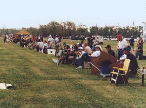
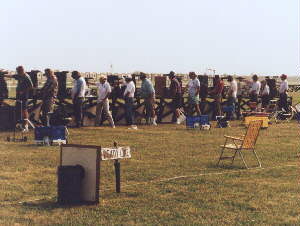

Camp Perry Survival Guide
Having been to Camp Perry a few times myself, I have learned what you need to survive Perry the hard way - from experience! Save yourself the trouble; study Mike LaVoie's excellent observations. You'll be glad you did. -JD
CAMP PERRY NOTES:
- Have your match confirmation in case the police stop you.
- Lock your guns separate from your ammo.(Which must be locked when you drive.)
- Remember to unlock your gunbox before you go to the range.
- Wear light colored clothes, as it can be very hot.
- Bring water, as it is can be hot.
- Bring a sweatshirt, as it may be cold.
- Rain suit and rubbers as it may be raining.
- A C-clamp to hold your gunbox open, as it may be windy.
- A score sheet holder- an enclosed one is nice when it is raining.
- A grease pencil- this is the only pencil that writes when the paper is wet.
- Golf umbrella
- A cart to carry everything. EB Marine in Fairfield sells them at about $43. They fold up, carry a lot and they don't fall over.
- Some people bring a bungee cord to keep the gunbox on the bench during heavy winds.
- Only give the competitor who is scoring you the score sheets for that day, as they may not be there the next day.
- You should also have:
- Screwdriver
- Allen wrenches
- Cleaning rod
- Shooti

ng diary, pen, pencil - Extra batteries for red dot scopes
- Scoring overlays
- Scoring plugs
- Rule book
- Shooting glasses (indoor and outdoor)
- Earmuffs (I use earplugs and earmuffs, called double plugging)
- Magazines
- One inch surgical tape
- Garbage bag (When it rains, you place the bag over your box)
- Wooden or brass rod. (In case the bullet takes a nap in your barrel. Push the bullet out the way it came in.)
- Spare parts
- I take it back. You don't need a gun box. You need a pickup truck to carry all this stuff around.
- Did I remember AMMO?
NON-SHOOTING EQUIPMENT:

Clothing should be loose fitting and comfortable. You might need rain gear due to the weather that includes rubbers, the kind that go on your feet. No openings in the shirt for hot brass to enter, which really hurts.- Shoes should be comfortable and should have flat soles. Never wear new shoes until they are broken in. Never wear sandals, fire ants love sandals.
- Bring: Bug juice, Suntan lotion, Earplugs, Scope, Tools to adjust sights and tighten scopes. Garbage bag to cover box in case of rain, cut out front and rear of bag so you can see through scope. The garbage bag can also make a poncho for you if necessary.
- Bring a towel for the first relay at Camp Perry. Walk to the benches and wipe the morning dew off. It's a nice thing to wipe off the entire bench. Do both the 50 yard and 25 yard bench. The range officers let you. By the time you get to the 25 yard line it usually will be dry.
- 1st relay is near the canon. Wear your earplugs. Prepare for colors. That means the raising of the flag hand over the heart or hat over your heart.
- Wear a cap to keep the sun, rain and brass off.
- Bring a metal screen to place between the shooter on the left and you as their fired cases may hit you. Check the rulebook for the size diameter of the screen. There isn't a rule about how big the screen is, only the size of the holes in it. If the screen is too big they may say something. Most screens are about 2 ft by 2.5 ft. Some people staple the screens to their gunbox. Others use a clamp. I use a spring-loaded clamp.
- Cee Cee makes great earplugs at Camp Perry. I love mine and have had them for years.
- Oh yeah, the most important thing to remember at Camp Perry is to have fun, tell a lot of jokes, make new friends, renew old friendships and bring enough extra money to buy me a beer.